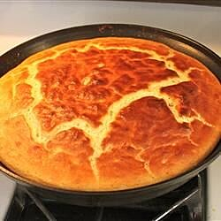

Amazingly dashing pan-filling awesomeness meant to tickle your tastebuds and dance on the throes of deliciousness.
With a touch of butter, some vanilla essence, sugar, salt, and all things nice. I am bringing you a homemade Souffle Pancake - all you can eat, and it tastes good too!
Ingredients
Six tablespoons salted butter.
Seven Large Eggs.
Two cups of Flour.
Two cups of Milk.
Two tablespoons White Sugar.
One tablespoon Lemon Juice.
One teaspoon Salt.
One teaspoon Baking Soda.
Half a teaspoon Vanilla Essence.
Five Fresh, Sliced Strawberries
One tablespoon Brown Sugar
Steps:
Set a rack in the middle of the oven and preheat to 175 degrees celcius.
Melt butter in a 12-inch oven-proof skillet over low heat, 3 to 5 minutes. Remove from heat.
Separate eggs, placing egg whites in a large bowl and egg yolks in a medium bowl. Add flour, milk, sugar, lemon juice,
salt, baking soda, and vanilla extract to the bowl of yolks. Add 3 tablespoons melted butter; lightly mix into a
slightly lumpy batter. Let batter rest while whipping egg whites.
Whisk egg whites into stiff peaks using a wire whisk or electric mixer. Gently fold batter into the egg whites.
Return the skillet to medium-high heat. Pour in batter just before butter starts to brown. Cook until slightly set, 2 to
3 minutes. Drop in sliced strawberries until they are mostly submerged
Transfer the skillet to the oven. Bake souffle until top is light brown and center is set and doesn't jiggle when
shaken, about 25 minutes. Broil until top is dark brown in color, about 2 minutes.
Slide pancake onto a plate and sprinkle confectioners' sugar on top.